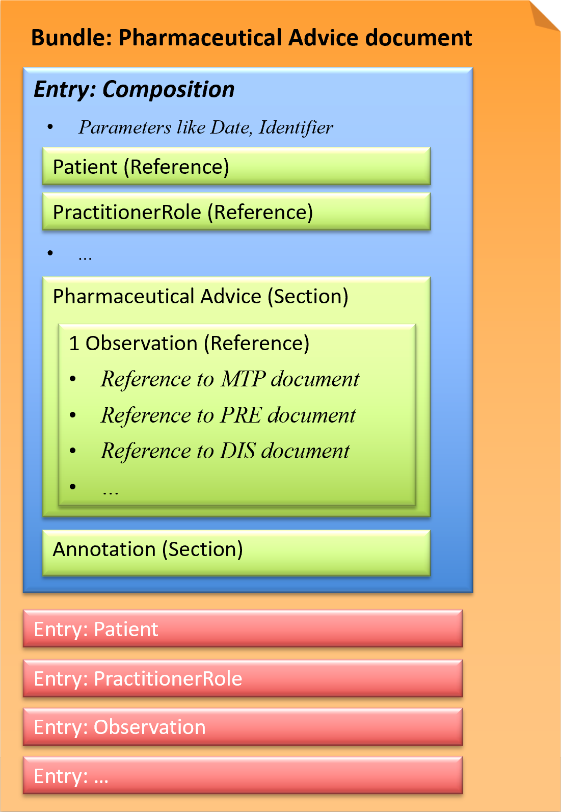

This page is part of the CH EMED (R4) (v5.0.0: STU 5) based on FHIR (HL7® FHIR® Standard) R4. The current version which supersedes this version is 6.0.0-ballot. For a full list of available versions, see the Directory of published versions
Pharmaceutical Advice document
The Pharmaceutical Advice document is a document in which health professionals track important observations (with the explicit consent of the patient), in regards to medication use (ONE).
This implementation guide describes the following two use cases:
FHIR document (Bundle)
This exchange format is defined as a document type that corresponds to a Bundle as a FHIR resource. A Bundle has a list of entries. The first entry is the Composition, in which all contained entries are then referenced.

Fig.: Pharmaceutical Advice document
Example instances
- 2-2 Pharmaceutical Advice document: XML, JSON
- Pharmaceutical Advice document with dosage change: XML, JSON
Profiles
Use Cases
A Pharmaceutical Advice document contains one Observation. The Observation refers to ONE already existing document (Medication Treatment Plan, Medication Prescription, Medication Dispense) and defines ONE action (Observation.code) to be performed on the referenced medication.
Modifying an existing medication
- CHANGE
- The planning of the medication has changed, e.g. dosage change: 1 tablet in the morning instead of 0.5 tablet. The Observation (example) refers the original Medication Treatment Plan document and a new MedicationStatement (example) with the changed information.
- Example PADV document with dosage change: 1 tablet in the morning instead of 0.5 tablet (as decided in use case step 1-1)
- The prescription can be dispensed after an indicated change, e.g. generic medication: Amlodipine instead of Norvasc. The Observation (example) refers the original Medication Prescription document and a new MedicationRequest (example) with the changed information.
- REFUSE
- This medication should not be taken/prescribed/dispensed. The Observation refers the original Medication Treatment Plan document and includes the refuse as annotation.
- The prescription (provisional, not yet confirmed or confirmed) should not have been already dispensed, even partially. The Observation refers the original Medication Prescription document and includes the refuse as annotation.
- CANCEL
- Medication is definitively stopped (not active anymore). The Observation refers the original Medication Treatment Plan document and includes the cancellation as annotation.
- Example PADV document from use case step 2-2: Medication is being stopped due to adverse medication reaction (dry cough)
- No dispense of this item can be performed anymore (or no dispense at all if the prescription was still not approved). The Observation refers the original Medication Prescription document and includes the cancellation as annotation.
- No dispense of the related prescription item can occur anymore and the patient has to stop taking this medication. The Observation refers the original Medication Dispense document and includes the cancellation as annotation.
- COMMENT
- The Observation refers the original document (Medication Treatment Plan document, Medication Prescription document, Medication Dispense document) and includes a general comment as annotation.